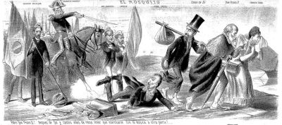
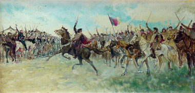
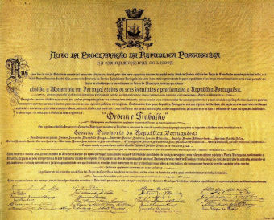

O Fim do Império: O Golpe da República no Brasil

A Proclamação da República no Brasil, em 15 de novembro de 1889, foi um marco histórico que encerrou o período monárquico e deu início à República.
Este evento foi o resultado de uma série de insatisfações sociais, políticas e econômicas que culminaram em um golpe militar, conduzido por figuras-chave do Exército brasileiro.
A Crise do Império (1870-1889)
Durante o Segundo Reinado, liderado por Dom Pedro II, o Brasil passou por um período de estabilidade e progresso. No entanto, a partir da década de 1870,
várias tensões começaram a emergir. O movimento abolicionista ganhava força, pressionando pela libertação dos escravos. A Lei Áurea, promulgada em 13 de maio de 1888,
aboliu a escravidão, mas deixou um legado de insatisfação entre os proprietários de escravos, que se sentiram traídos pelo governo imperial.
A abolição, sem indenização para os donos de escravos, gerou um ressentimento profundo e afastou o apoio da elite rural ao Imperador.
A Insatisfação Militar (1889)

Outra força crucial na derrubada da monarquia foi o Exército brasileiro. Durante a Guerra do Paraguai (1864-1870), o Exército havia crescido em importância e prestígio.
No entanto, após a guerra, os militares se sentiram desprestigiados e marginalizados pelo governo imperial. Lideranças militares, como o marechal Deodoro da Fonseca,
começaram a articular a insatisfação dentro das fileiras. Em 1889, a tensão entre o governo e os militares atingiu seu ápice, com a percepção dos golpistas de que a monarquia
em sua percepção era um obstáculo para o progresso e a modernização do Brasil.
O Golpe de 15 de Novembro de 1889
Na manhã de 15 de novembro de 1889, um grupo de oficiais do Exército, liderado pelo marechal Deodoro da Fonseca, tomou as ruas do Rio de Janeiro.
Sem encontrar resistência significativa, eles depuseram o governo imperial e proclamaram a República. Dom Pedro II, pego de surpresa, não ofereceu resistência e
aceitou o exílio na Europa. A transição de poder foi relativamente pacífica, refletindo a fragilidade do apoio à monarquia na época.
A proclamação da República marcou o início de um novo capítulo na história do Brasil. O governo provisório, liderado por Deodoro da Fonseca, enfrentou a tarefa de consolidar
a nova ordem republicana na qual falhou anos depois. Em 1891, uma nova constituição foi promulgada, inspirada no modelo dos Estados Unidos, estabelecendo um governo federalista e republicano.
Conclusão

A proclamação da República no Brasil foi o culminar de um longo processo de insatisfação com a monarquia, alimentado por questões sociais, políticas e econômicas.
O golpe de 15 de novembro de 1889 encerrou o Império e lançou o Brasil em uma nova era de governo republicano. As mudanças que se seguiram moldaram o futuro do país,
enfrentando desafios e buscando a modernização e a integração global. A transição para a República não foi isenta de dificuldades, mas estabeleceu as bases para o desenvolvimento do Brasil contemporâneo.
Todos os direitos preservados.™